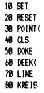
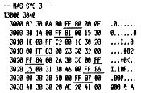

80-Bus Journal |
April 1983 · Ausgabe 4 |
reservierte Wörter eingefügt wurden (denn diese bestehen aus 2-Byte-Token), dann die Sonderbehandlung von INPUT und PRINT (weil ja in einem Textstring auch Grafikzeichen vorkommen können, die nicht als Token interpretiert werden dürfen) dann… Plötzlich war ein relativ umfangreiches Programm daraus geworden.
Das X-Tal BASIC hat allerdings selbst viel mitgeholfen. So ist es hier nicht notwendig, die Tokens auf umständliche Weise selbst aus dem Programmspeicher herauszufinden (N.Journal 10/81 Wolfgang von Jan ; leider ließ er damals die Operatoren wie +-* etc. aus). Erstens sind sie im Manual abgedruckt, und zweitens liefert die Funktion CMD$(x) die reservierten Wörter für die Tokens „x“. Im Beispiel finden Sie die Befehle und Tokens (unterstrichen) für die neuen Statements aus dem ersten Artikel.
|  |

|
Die Anwendung des Programme ist vergleichsweise einfach. Zunächst wird das Anpassungsprogramm ADAPT geladen, dann das Microsoft-BASIC-Programm.
Nun wird ADAPT mit E D00 gestartet, und das Programm ist umgewandelt. Man sollte sich die Endadresse des Programmes in #CB7 (nach dem Editieren!!) anschauen. Sie ist für das Abspeichern auf Cassette wichtig, und muß in Zukunft auch manuell in diese Adresse geladen werden, wenn das Programm neu für X-Tal eingelesen wird. Vielleicht hat ein Leser einen Tip, wie man das eleganter lösen könnte. ****
Nun liest man das X-Tal BASIC ein und startet mit 1002 (wird auf dem Bildschirm aufgefordert).
Allerdings läßt sich ein Editieren vor dem Progranmetart nicht vermeiden (zumindest nicht mit dieser Version). Man könnte alle auftretenden Eventualitäten möglicherweise auch per Programm umsetzen lassen, aber das war mir einfach zu viel.
Beim Editieren sind folgende Satements zu ändern:
| a | wird zu Printa |
| SET (x,y) | wird zu SETx,y |
| RESET(x,y) | s.o. |
INCH tritt bei ursprünglichem USR(X) auf. Falls eine andere Maschinenroutine als die Tastaturabfrage gefordert wird, muß CALL eingesetzt werden (oder KBD, wenn die Tastatur ohne Warteschleife abgefragt werden soll).
Sollte ich die eine oder andere Änderung vergessen haben, so wird Sie Ihnen beim Programmlauf als spezifische Error-Meldung mitgeteilt und kann leicht nachgeholt werden.
Denken Sie daran, daß DOKEs für Tastatur-Maschinencodes wegfallen und daß andere Maschinenprogramme nur im Bereich E00 bis E7F liegen dürfen; der Rest bis 1000 wird vom BASIC benutzt.
Das alles klingt wieder einmal sehr kompliziert, sollte Sie aber nicht abschrecken. Nach dem Umwandeln Ihres ersten Programms sehen Sie keine Schwierigkeiten mehr.
Das aufwendige Nachschauen, Merken und Nachtragen des Programmendes ist nur notwendig, wenn man -wie ich das tue- die Programme auf Minicassette abspeichert. Selbstverständlich können sie aber auch mit CSAVE und den entsprechenden Variationen, die X-Tal zuläßt, ganz normal auf Cassette geschrieben werden, und der oben beschriebene komplizierte Vorgang entfällt.
| Seite 7 von 28 |
|---|